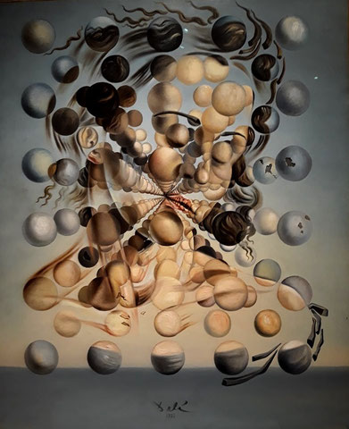
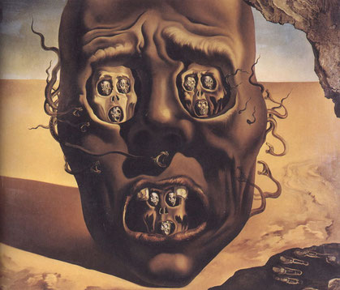
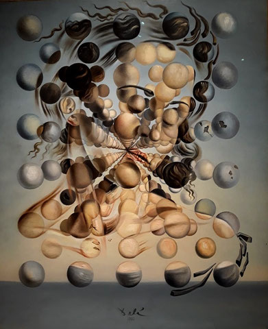
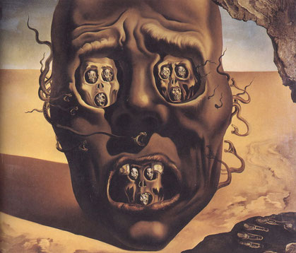

Сальвадор Дали – один из самых популярных живописцев не только в Испании, но и во всем мире. Его известности способствовало, конечно, оригинальное творчество, а также своеобразный стиль и поведения. В мае 1094, в городе Фигерас, родился будущий гений сюрреализма в семье нотариуса. Кроме отца и матери, у него была сестра и старший брат, который вскоре умер от болезни. Дали рос непоседливым и капризным ребенком, который привык добиваться своего и привлекать внимания окружающих. С учебой дело не пошло, но рисовать он начал с самых малых лет.

